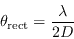
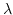
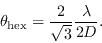
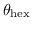
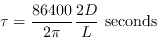
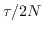

Mosaicing Observing Strategies
The job of planning a mosaic experiment requires extra thought over
a simple conventional observation. Issues that you must decide in
the planning of an experiment include:
- Pointing grid pattern: In a mosaic experiment, you observe
a number of pointings - possibly a few to several hundred, depending
on the size of the source of interest. To consider how dense the
sampling grid needs to be, consider the primary beam of an antenna.
In the u-v plane, the Fourier transform
of the primary beam pattern is just the cross-correlation between
two antenna illumination patterns. For the 22-m ATCA dishes, the
Fourier transform of the primary beam pattern will be of finite and circular
extent, having a diameter of 44-m. Because it is of finite extent,
Nyquist's sampling theorem indicates that, provided we do not sample
in the sky domain coarser than some limit (i.e. provided the pointing
grid pattern is sufficiently fine), all information can be retrieved.
Assuming a standard, rectangular grid, the sky plane Nyquist sampling limit is

( is the wavelength, and D is the dish diameter). For a
well-illuminated dish, this spacing corresponds roughly to
half-power point spacing between field centres. Because
the extent of the transform is circular, we can do somewhat better than
this, by using a so-called hexagonal grid. This grid places pointing
centres at the vertices of equilateral triangles - packing six triangles
together gives a hexagon. An extension of Nyquist's theorem indicates that

So a hexagonal grid allows a given area of the sky to be covered
in a smaller number of pointings (it does also require slightly longer drive
times between pointings - see below - which may occasionally be a
consideration).
Table 21.1 gives this
grid spacing for ATCA dishes.
Table 21.1:
Mosaic grid spacing for ATCA dishes
| Frequency |
Pointing Spacing |
 (GHz) (GHz) |
 (arcmin) |
| 1.384 |
19.6 |
| 2.496 |
10.9 |
| 4.800 |
5.6 |
| 8.640 |
3.1 |
- Dwell time: Most mosaiced experiments will continually switch
between the different pointing centres (or a subset of them, if there
are too many pointing centres to visit in a single observation).
Normally they will be visited in a raster scan fashion. Switching to a
new pointing centre typically results in 0.5 to 4 seconds of `lost' time
while the antennas are slewing to the new pointing. This time can be a
significant consideration in some experiments - e.g. if the
integration time was 10 seconds, and the pointing centre was switched
every integration, up to about 40% of the observing time could be lost.
To avoid this, you will want to dwell on a given pointing centre for as
long as reasonable. This must, however, be traded against loss of
tangential u-v coverage that occurs when each pointing is not
visited sufficiently frequently. To determine the balance, recall that
a correlation does not measure the value of a single point in the
u-v plane, but a region corresponding to twice the diameter of the
dishes. At transit (when the projected baselines are changing fastest),
the time taken for a baseline to rotate to a completely independent
visibility point is

Here L is the maximum baseline length of interest when imaging
and D is the dish diameter.
Ideally you will want to sample twice as frequently as this, i.e. for
N pointings, a dwell
time of  would be best. You may, however,
decide to suffer tangential holes in the u-v coverage.
- Field Naming Convention: When preparing the observe files for an
ATCA mosaic experiment, you
will create a `mosaic file'. This gives a field
offset, integration time and field name for each pointing centre. To
simplify a step in the reduction process (the splitting step only), it is
recommended that field names
be composed of two parts, separated by an underscore character. This recommendation
is purely to simplify some steps in the data reduction in Miriad. The first
part should be common to all fields. Typically this will be the
name of the object being mosaiced. The
second part is unique to each field, typically being a field number. For
example, the field name for pointing 123 for a Large Magellanic Cloud
mosaic would be called
lmc_123.
Miriad manager
2016-06-21